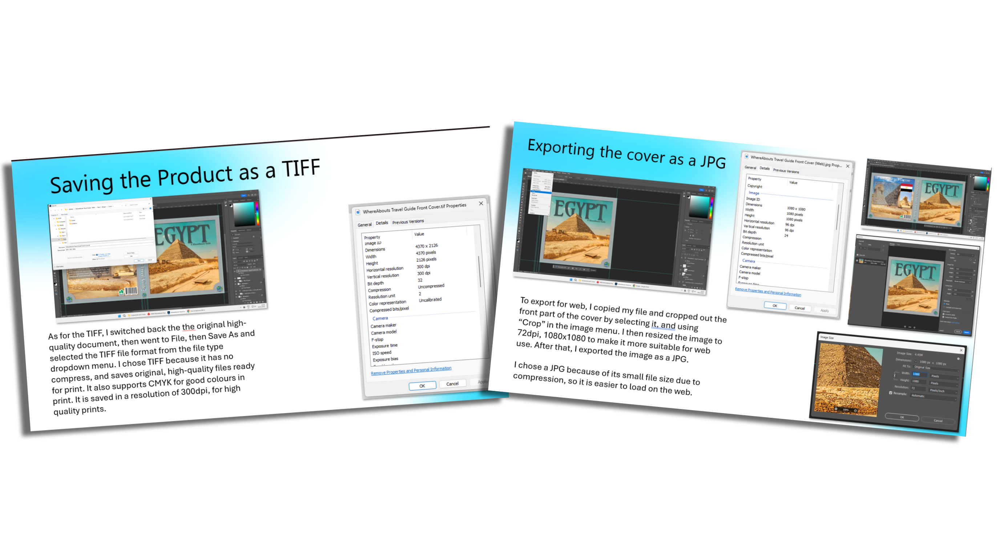

Print and Online Versions
Export the correct versions for web and print, using the right file types, colour mode and resolution.
Task 1
Step 13
Preparing Print and Online Versions
Watch this walkthrough showing how to correctly prepare and export print and online versions of your product.